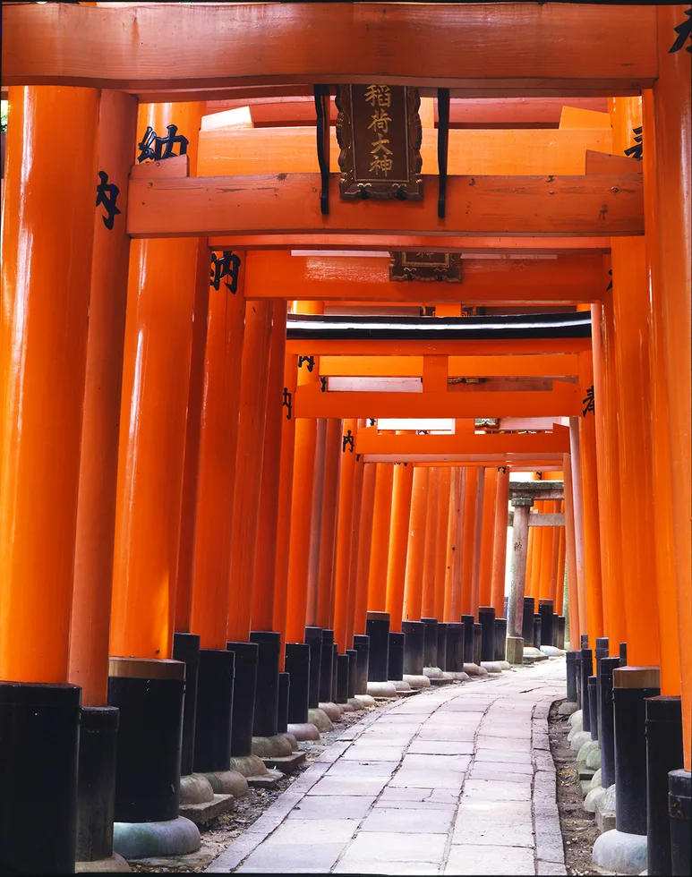

KYOTO & OSAKA ✦
從京都的朱紅鳥居，到大阪的河畔霓虹。和三位旅伴一起，慢慢逛完這趟關西之旅。
在京都沿著石板路散步，在大阪順著河岸找晚餐。

千本鳥居、東山老街與嵐山竹林。
大阪城、新世界與道頓堀的霓虹。
四日示範路線，停留時間可依步調調整。
開啟 JavaScript 以使用互動行程。
用中日文或英文搜尋，或沿著吉伊卡哇的足跡逛關西。
收藏想逛的門市，出門前查看各店的入場公告。
旅客分享的京都和大阪去處。
正在載入推薦…
收藏可分配到 Day 1–4。
目前使用裝置上的資料。
在旅途中完成各天路線，集滿四枚印章即可下載。
往京都站或大阪站可查 JR 特急 HARUKA 的停靠站和最新時刻。
京都站和大阪站之間可查 JR 京都線。從祇園或河原町出發時，也可比較京阪與阪急的路線。
查景點的最近車站，再用 Osaka Metro 路線圖確認出口和轉乘。
すみません、ここへ行きたいです。行き方を教えていただけますか？
不好意思，我想去這裡，可以告訴我怎麼走嗎？